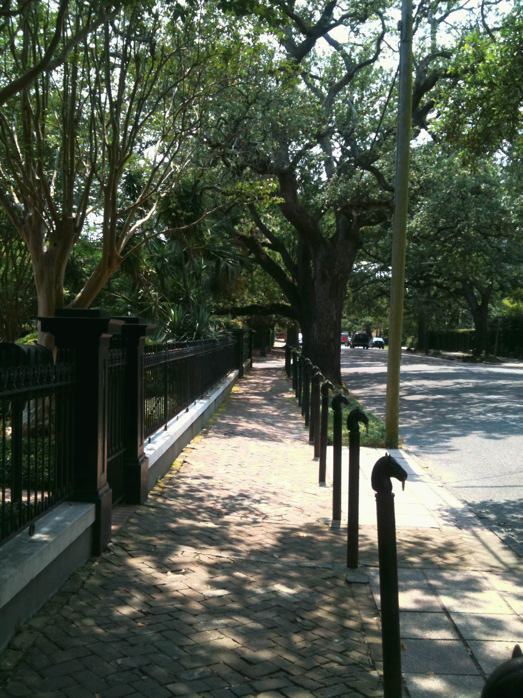

My Photography Portfolio




Il Mundo e Bello. The world is beautiful. Everywhere I look, I see the beauty in Nature. I love to photograph the colors and patterns found in landscapes, fruits, flowers and in the eyes of a child . My photographs are of places I visited, either sacred or mundane, from relaxed interiors to golden sunsets and misty mountains. This is my portfolio of the people and places that reflect beauty. I would love to bring to life your vision, your images as well.
Bello Mundo